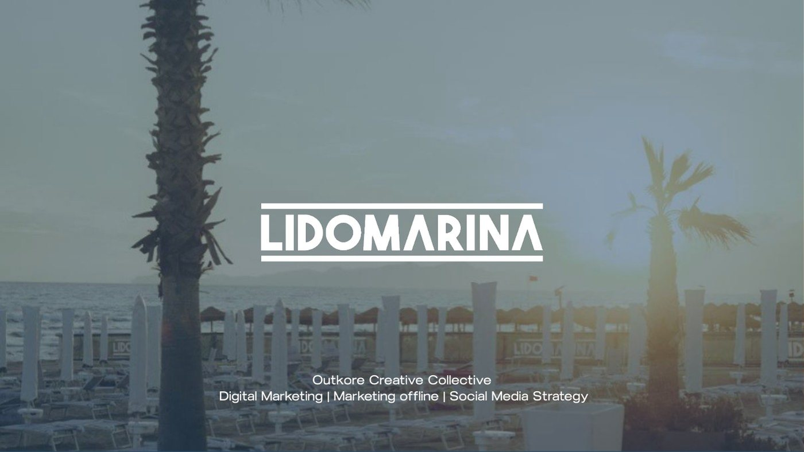
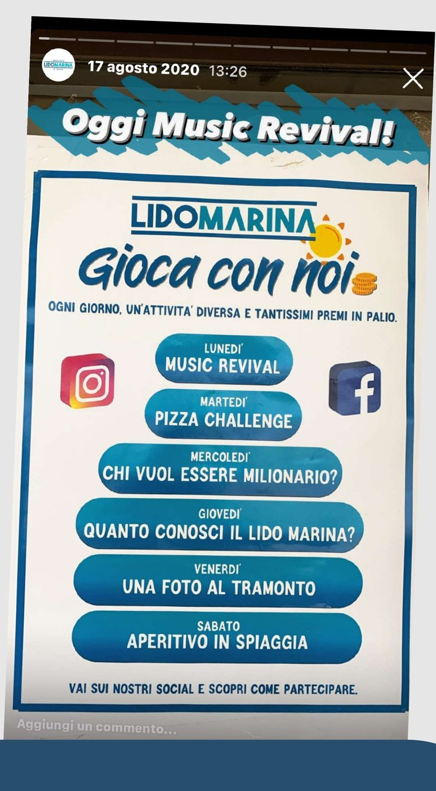
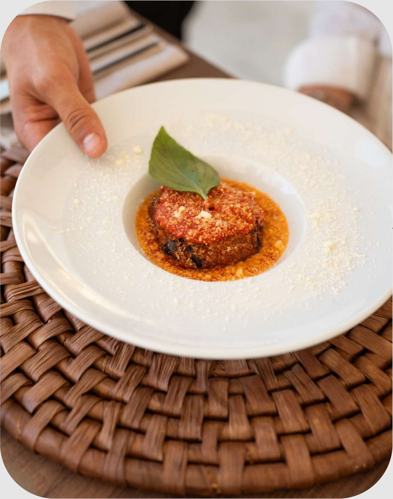
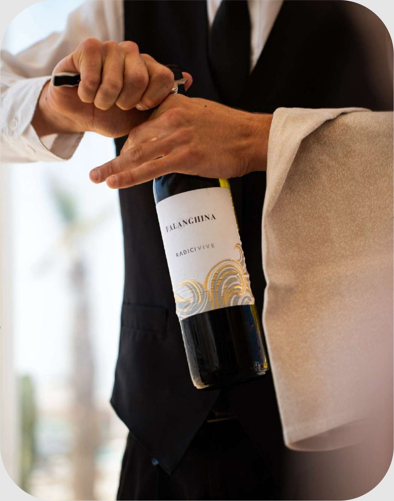
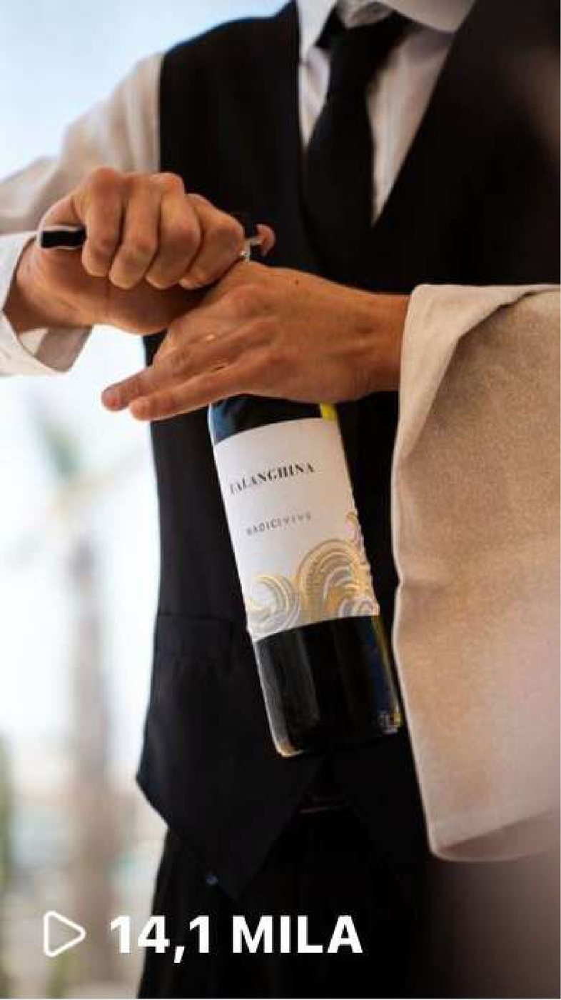
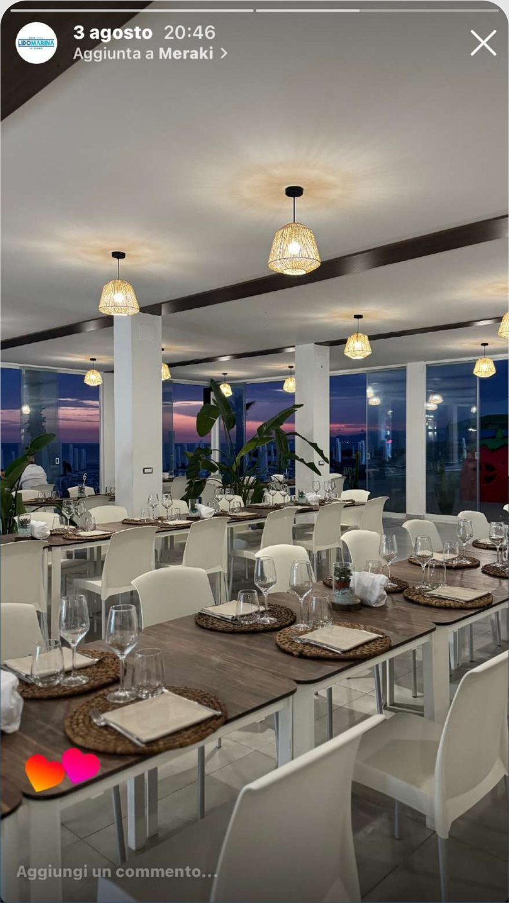
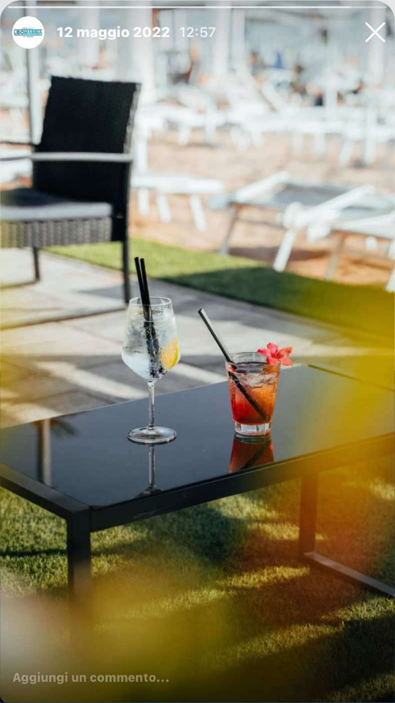
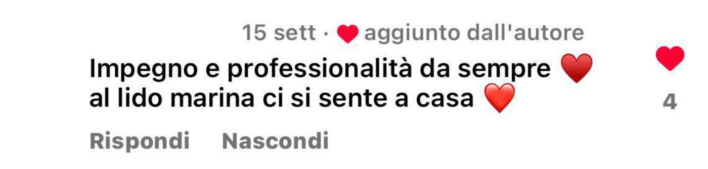
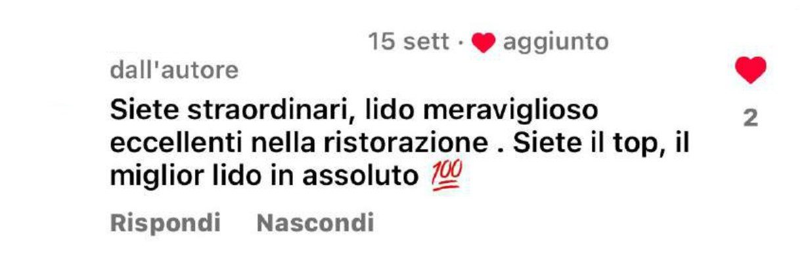
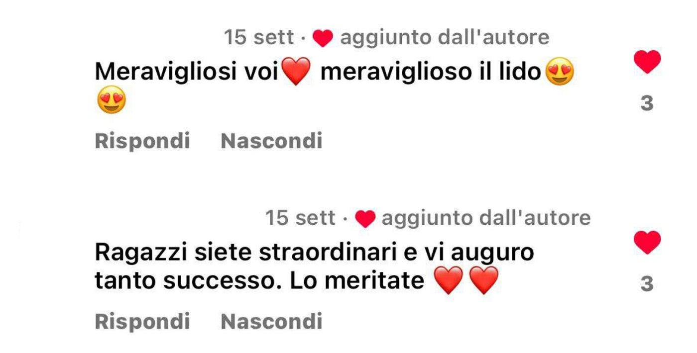

Lido
Marina

Uno stabilimento da rinnovare
Il Lido Marina è una struttura balneare a Baia Domizia, in Campania. La nuova gestione, in mano a due giovani ragazzi della zona, ha avuto fin da subito un obiettivo: rimodernare la struttura e i servizi per attrarre un pubblico più giovane.
Oltre alla spiaggia, il lido offre bar e ristorante di cucina mediterranea.
Dall’offline all’online
Portare online la clientela che fino ad allora viveva il lido solo di persona, aumentare la presenza sui social e avvicinare un pubblico più giovane.
Spiaggia e social insieme
Strategie di marketing offline per convertire chi passava una giornata al lido: QR code e attività di intrattenimento che unissero spiaggia e social. Come la caccia al tesoro:
“Gli indizi nelle stories per trovare, nascosti sul lido, i ticket che valevano premi a sorpresa.”

Reel e TikTok
Contenuti dinamici pensati per un pubblico giovane, puntando molto su Reel e TikTok per raggiungere nuove persone in linea con il nuovo target.
Accanto al feed, le stories hanno raccontato le giornate al lido e le attività in programma.
Il nuovo posizionamento
Alcuni scattiAlcuni degli scatti realizzati per comunicare il nuovo posizionamento del lido.



Reel & stories
Stagione 2024



I risultati
Stagione estiva 2024Crescita organica e interazioni sotto i post che parlano da sole.

 Next project
Talent Garden · NapoliThe WorkshowProgetto completo
Next project
Talent Garden · NapoliThe WorkshowProgetto completo


